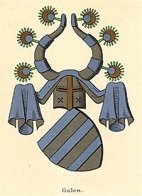

24038662 Sune Ebbesen Hvide
Dansk storman, Jarl. Blev ca 66 år.

Far:
Mor:
Född:
omkring 1120 Knardrup, Själland, Danmark.
Död:
1186 Knardrup, Själland, Danmark.
Barn med ?
Barn:
Personhistoria
1120?
Födelse omkring 1120 Knardrup, Själland, Danmark
1186
Död 1186 Knardrup, Själland, Danmark
Källor